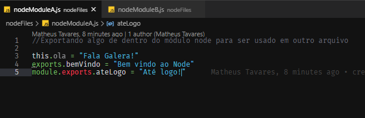
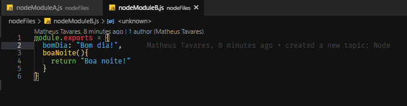
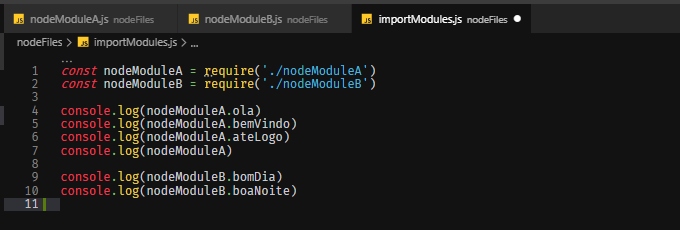

Here will be presented some Node concepts.
Node = Runtime JS (V8 + LIBUV)
Node is divided in modules. Each file is a module. To change the visibility (default is private), we have to do exports/imports.
Exporting modules with node

Exporting modules with node

Importing modules with node

You can use external modules on node, just you need install with NPM package.